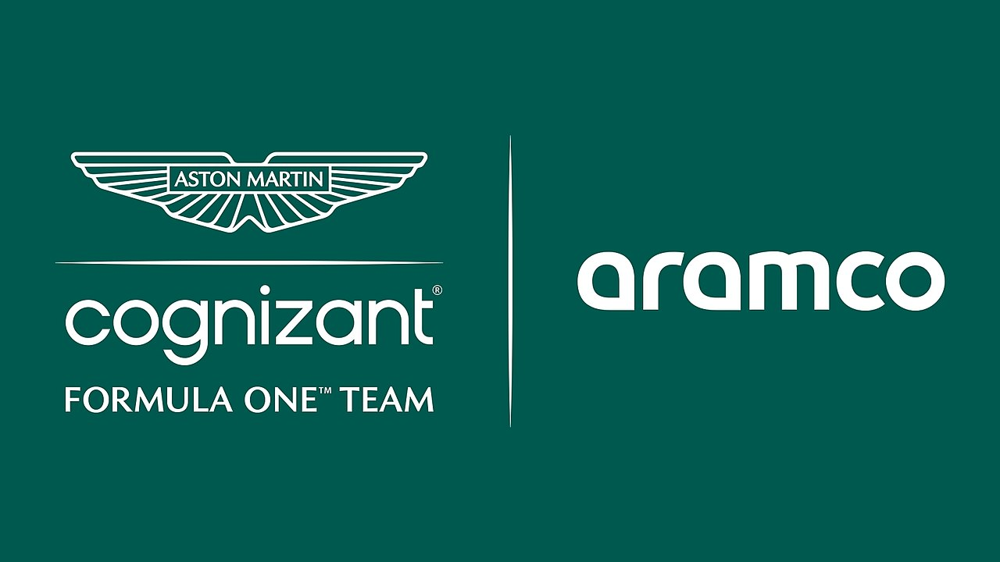

Red Bull Racing

Nacido tras la compra de Jaguar por la empresa de bebidas energéticas Red Bull, el equipo revolucionó la F1 con su enfoque joven e innovador. Dominó entre 2010 y 2013 con Vettel, y volvió a la cima con Verstappen desde 2021.
Ferrari

El equipo más histórico y exitoso de la F1. Amado por millones, Ferrari ha tenido épocas doradas (como con Schumacher en los 2000) y momentos difíciles. Siempre es protagonista por tradición, pasión y potencial.
Mercedes

Después de regresar como equipo oficial en 2010, Mercedes dominó la era híbrida (2014–2020) con un rendimiento superior y fiabilidad impecable. Aunque han perdido el dominio, siguen siendo contendientes fuertes.
Alpine

El equipo nacional de Francia ha tenido altibajos. Con Alonso y luego Ocon/Gasly, han logrado buenos resultados, pero luchan por estabilidad y dirección clara.
Haas
Primer equipo estadounidense en décadas, fundado por Gene Haas. Su enfoque eficiente usando piezas de Ferrari les dio buenos resultados en sus inicios, pero en los últimos años ha estado en la parte baja de la parrilla.
McLaren
Uno de los grandes nombres de la F1, con leyendas como Ayrton Senna y Alain Prost. Tras un período difícil en los años 2015–2020, han mejorado notablemente con jóvenes talentos como Lando Norris y Oscar Piastri.
Aston Martin
Renombrado como Aston Martin en 2021 bajo el liderazgo de Lawrence Stroll. Con Fernando Alonso al frente, han demostrado un salto competitivo enorme desde 2023, con podios y ambiciones serias.
RB
Segundo equipo de Red Bull, fundado para formar jóvenes promesas. Cambió de nombre a AlphaTauri en 2020 y luego a "RB" en 2024 por patrocinio. Ha tenido sorpresas, como la victoria de Gasly en Monza (2020).
Kick Sauber
Sauber ha sido equipo privado, aliado con BMW, Alfa Romeo y ahora está en transición para convertirse en Audi F1 en 2026. Este período de cambio se centra en preparación técnica para el futuro.
Williams

Uno de los grandes nombres históricos de la F1, con campeones como Nigel Mansell y Alain Prost. Ha pasado años difíciles desde 2015, pero bajo nueva dirección y con apoyo técnico ha comenzado a mostrar signos de recuperación.